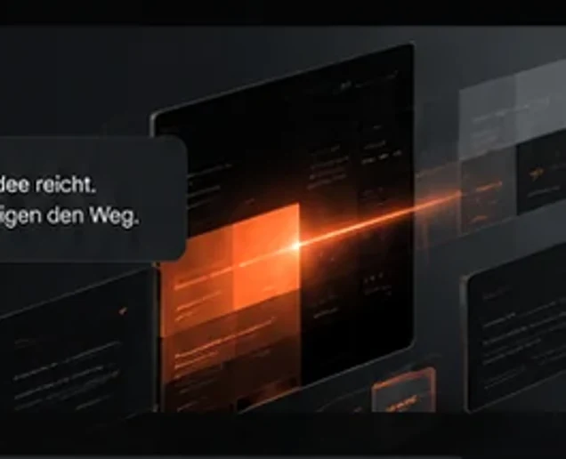
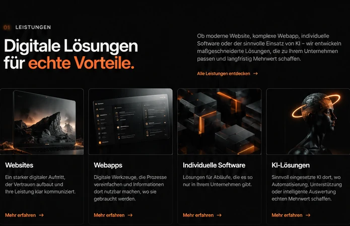
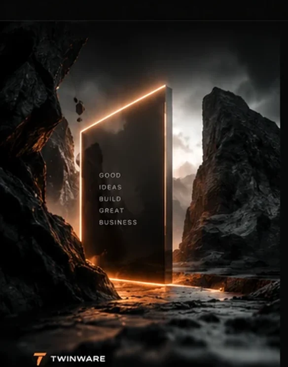
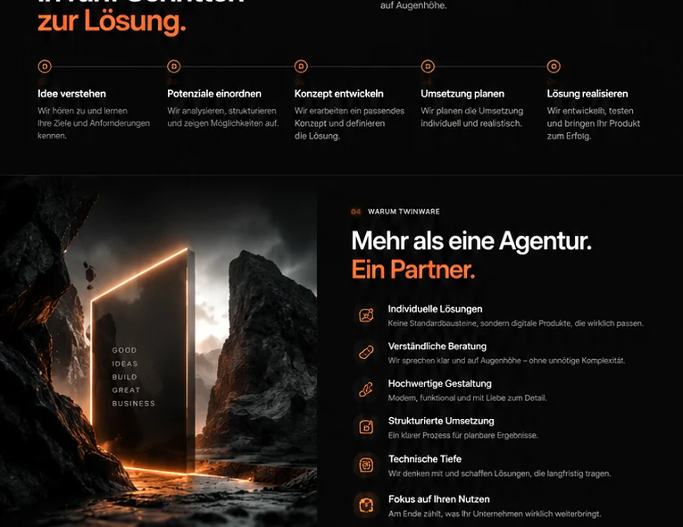

Was soll besser werden?
Ein Problem, ein Ablauf oder eine neue Idee reicht als Startpunkt.
IDEE
WIRD
PRODUKT
Für Unternehmen, die mehr wollen als Standard. TWINWARE entwickelt digitale Produkte, die zu Ihren Abläufen, Zielen und Ideen passen – auf jedem Bildschirm.
Wir übersetzen Anforderungen in eine klare Produktidee. Ohne Fachchinesisch, ohne unnötigen Overkill.
Ein Problem, ein Ablauf oder eine neue Idee reicht als Startpunkt.
Funktionen, Nutzerwege und Prioritäten werden sichtbar.
Erste Oberflächen zeigen früh, wie sich das Produkt anfühlen kann.

Architektur, Datenhaltung und Schnittstellen planen wir individuell.
Ob moderner Webauftritt, komplexe Webapp, mobile App oder maßgeschneiderte Software – wir entwickeln passgenau und verständlich.
Ein starker digitaler Auftritt, der Vertrauen aufbaut und Ihre Leistung klar kommuniziert.
Website besprechen ↗Digitale Werkzeuge, die Prozesse vereinfachen und Informationen dort nutzbar machen, wo sie gebraucht werden.
Webapp besprechen ↗Lösungen für Abläufe, die es so nur in Ihrem Unternehmen gibt.
Software besprechen ↗Wir zeigen früh, wie sich ein digitales Produkt anfühlen und in Ihren Ablauf passen kann.
Idee prüfen ↗
Beschreiben Sie Ihr Vorhaben. Der Projekt-Check ordnet die Idee ein, schlägt sinnvolle Funktionen vor und macht den Umfang greifbar.
Nach der Analyse erscheint hier eine erste, unverbindliche Einordnung.
Technische Umsetzung wird individuell von unserem Entwicklungsteam geplant.
Projekt besprechen ↗Ein klarer Prozess gibt Orientierung – von der ersten Idee bis zur fertigen Lösung.
Ziel, Nutzer und Umfeld kennenlernen.
Anforderungen analysieren und Möglichkeiten zeigen.
Die Lösung strukturieren und visualisieren.
Umfang und Prioritäten realistisch festlegen.
Entwickeln, testen und verfeinern.

Keine Lösungen von der Stange, sondern digitale Produkte, die zu Ihrem Unternehmen passen.
Keine Standardbaukästen.
Klare Entscheidungen ohne unnötige Komplexität.
Modern, funktional und präzise.
Nachvollziehbarer Ablauf.
Solide geplant, einfach bedienbar.
Was Ihr Unternehmen wirklich weiterbringt.
Das Wichtigste für eine erste Einschätzung.
Für Unternehmen und Teams, die eine individuelle digitale Lösung benötigen.
Nein. Eine grobe Idee oder ein Problem reicht als Startpunkt.
Ja, besonders wenn bestehende Standardsoftware nicht zum Ablauf passt.
Wir klären Ziel, Umfang und offene Fragen und schlagen die nächsten Schritte vor.

Ob konkrete Idee oder erste Überlegung – beschreiben Sie kurz, was Sie vorhaben.